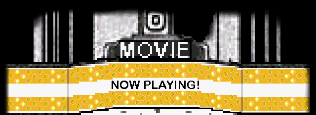
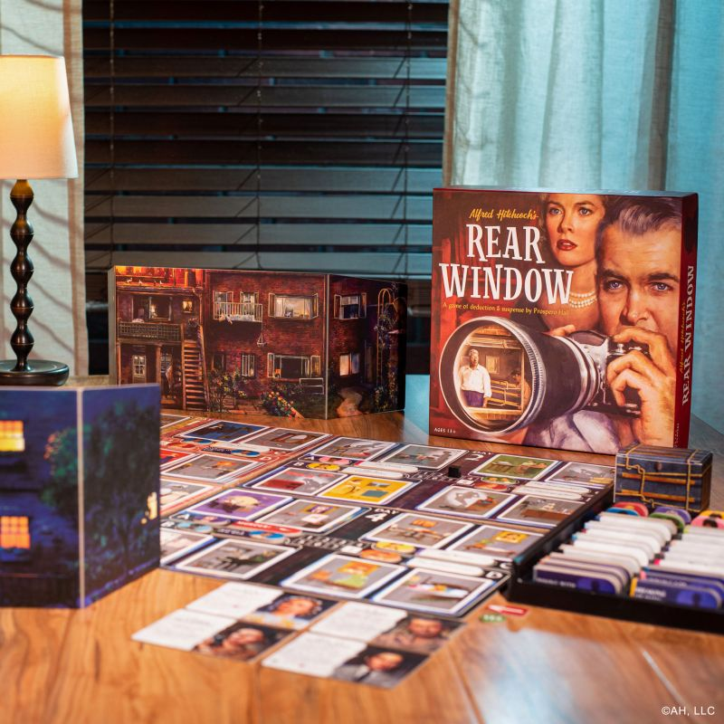
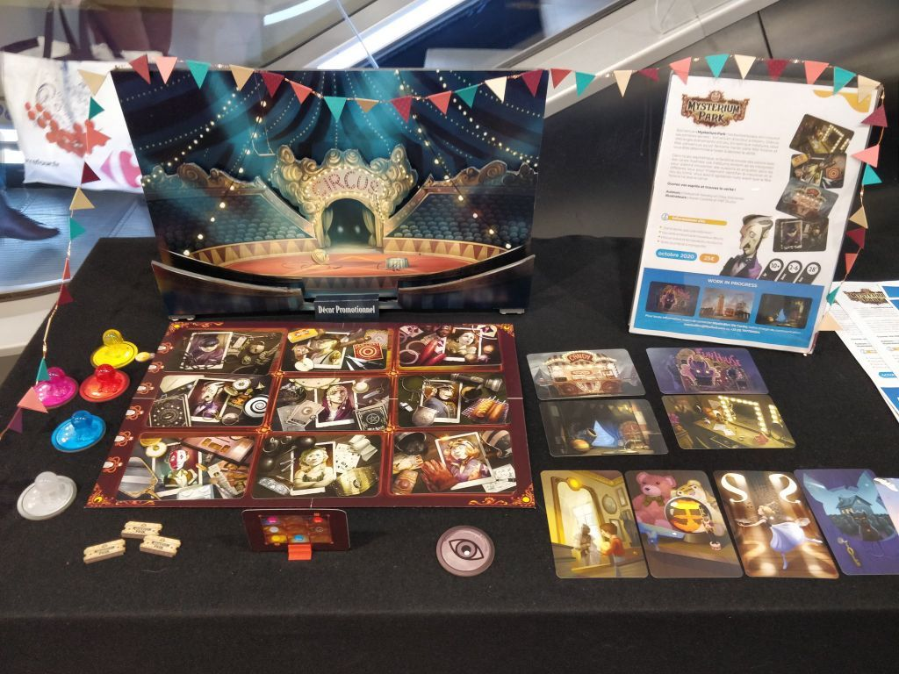
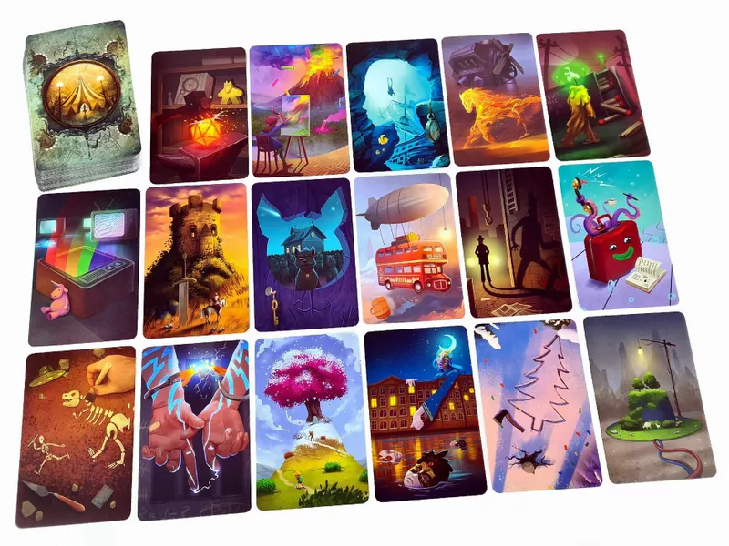
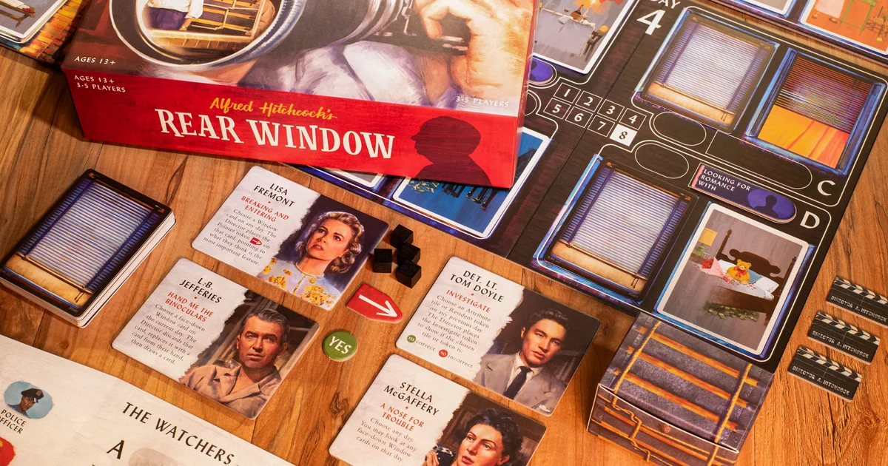
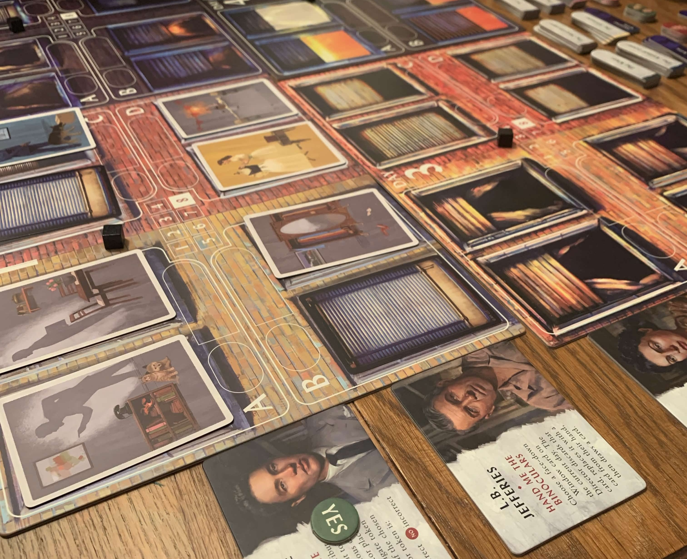
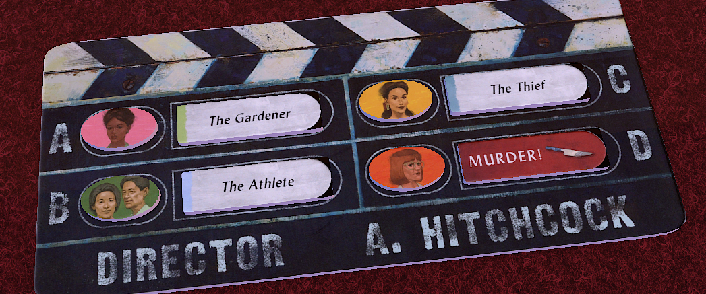
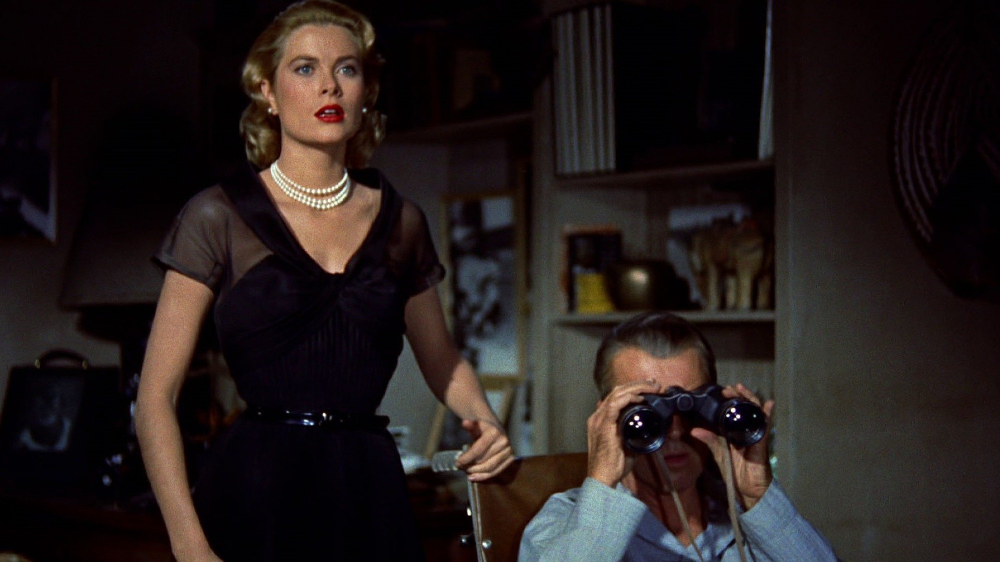

(thanks to the publisher Funko Games for taking this really nice promo picture)
This is about a board game that came out a few years ago called Rear Window.
10/19/2026: I fixed a lot of grammatical errors and confusing phrases. If you still think this essay is bad just think how much worse it used to be.

Have you ever been wrong, like really wrong? For the first time in my life I am. Rear Window changed the way I look at an entire genre of board games: limited communication games. The pitch for these games is simple: one layer needs to communicate information to the other players , but can only communciate in specific ways. A common version of this is places cards with art out to communicate this. To communicate the word "clock" they might put out a bed and some electricity, because alarm clocks wake people up and there's electricity in clocks, and it's up to the rest of the players to decode that logic correctly. I used to think these games were really underwhelming. But where other games in this genre zig, Rear Window zags. Rear Window challanges many assumptions about how these games "need" to play and re-engineers the genre from first principles. Looking at this game must have been what classical painters thought when they saw Van Gogh—ok maybe not that crazy but I think you get my point.

The most popular game in this subgenre is probably Mysterium. The communicator has a bunch of dreamlike illustrations and needs to communicate only a few pieces of information. And boy howdy did I find this game sluggish. It seems an intentional part of the design is making these card illustrations as unhelpful as possible. Cards always have a million little details that don't connect under a common theme. When I played Mysterium it often felt like a crapshoot whether my audience would correctly guess the info, or hyperfixate on a tiny detail that didn't matter.
Taking that clock example: I might put out electricity and a bed, except the electricity card also has handcuffs, so now the othe rplayers are completely offtrack and trying to combine bed with handcuffs. And now they are so off-track nothing I can do with these obtuse cards can set them straight again.

I assume this frustration with using the cards was intentional. A "level one" design document for this game would say somehting along the lines of "if the cards are easy to use, there'd be no game". It makes sense why the cards need to be annoying to use, but for me it was never FUN. This game is like handing me crayons to make a crossword puzzle. Sure it's a challenge problem, but the tools are so ill-fitting for the task I'm just gonig to get frustrated. Here's Rear Windows first big departure: look at these cards!
Need to reference the yellow lady? There she is! Need to say something about a musician? Look at all those instruments! Mysterium in the same position would've just throw you cards with MC Esher Stairs, the Necronomicon, and a plant growing human heads. Rear Window just gives you the things you need! It's so beautiful I might cry.
One might think easy cards remove any challenge from the game, but not so! These cards are easy to use with a purpose. With these cards giving a smooth foundation to be built on top of. Or, if you prefer a movie metaphor, it's a nice clean set to film your movie with. You see you need to communicate a lot more sheer info in Rear Window than Mysterium. In Mysterium players need to guess 1 person, 1 place, and 1 object. (Cnl Mustard, in the ballroom, with the candlestick). In Rear Window, players need to guess 4 characters, in 4 rooms, doing 4 activities, with not that many more cards to do it with. With Mysterium you have a lot of cards that are hard to use, in Rear Window the cards are easy to use, but you have to use them very carefully to communicate all the information. It's just so much more interesting to come up with clues in Rear Window.
The player placing the cards (the director) isn’t the only one with these interesting decisions to make though, the audience (the guessers) do as well. While the audience tries to unpick the director’s logic, they also have 3 once-per-game powers. So sprinkled into the discussion of "what did they mean by this" are discussions of "is this a good time to use this power". The debate on using the powers gives stuck players a way to move forward, and just breaks up the experience; it's not all logic untangling it's also the kinda game-y decision on the best time to use the lifeline. Who Wants to Be a Millionaire gets a ton of mileage out of it's lifeline system for the same reason: it's nice to take a momentary break from the endless main game to do something else.
These once-per-game abilities are also very concrete. Unwinding weird logic with cards is very... vibes based; it's a world of ethereal guesswork. These abilities let you make very concrete decisions. "If we use this we will narrow it down to these two things with 100% certainty." That’s Rear Window’s secret. Arguing about the director’s weird logic is still in the game, but it’s paced out between more concrete mechanical decisions. Like any good movie, pacing is important. A whole game about nothing but wibbly-wobbly logic chains would get old fast.

Of course I should mention these powers have some sauce to them. The coolest is this arrow token: the audience chooses a card and the director places the arrow wherever they want on the card. First off, I havn’t seen this type of power in any game of this genre before, which is crazy because it feels like it really plays to the genre’s strengths. And secondly, this power has so many interesting uses. Every game there's lots of debate on when and where is best to use this power. Use it early to lock in some info? Save it for the end when you'll need it most? Which clue do you use it on? Which cluse are you most unsure about? One time my players argued for 5 minutes about which clue to use the arrow power on. And once they decided I placed the arrow on the card, and all the players looked down at it, then back up at me and said "That doesn't help at all." And we burst out laughing. It’s so juicy. The other once/game powers are really cool too.

This wouldn’t be a game about film without a really cool twist at the end. The game is ostensibly a cooperative game. The director and audience are both working together to win. But in about 1/3 of games, the person giving the clues actually has a murderer they are trying to hide! They may be be working against you! In this case the director still wants the audience to guess most of the rooms correctly, but they specifically want the room with the murderer to be guessed wrong (we wouldn't want the audience guessing the twist after all). But if the audience guesses where the murderer is, the audience wins. This game is 100% cooperative most of the time, but sometimes a killer shows up and the game becomes 100% audience vs director. Only one team can win.

On paper this rule feels like it wouldn’t work. How is the audience supposed to guess there’s a murder if the director doesn’t want to tell them? Well, have you ever seen a murder mystery? It’s never one clue that gives it away, it’s lots of little clues that all line up. The most obvious hint is the director doesn't give good cards for one of the rooms. The director probably did that to not waste their precious cards on it. But there’s a ton of other smaller things the audince will look for too. Reader you might just have to trust me when I say this mechanic plays great. And it's another little mechanical thing to break up the crazy logic untying the genre is known for.

We really are living in a golden age of party games. Gone are the days of pictionary's tyrannical rule. Every year more cool party games are coming out that don't involve drawing pictures or miming actions. What a great time to be a party game player. So Clover, Decrypto, Don't Get Got, 2 Rooms and a Boom. All really simple games that are just really fun. Honestly Rear Window is on the more complex end of that list I just mentioned. If you wanted you could probably throw out the murderer module and the game will still play great. But for me the murderer being a possibility makes every game so much more juicy to play. But the core is still great. Taking Mysterium's awkward cards, replacing them with easy to use cards, and then asking the director to communicate way more information was a genius move, and the player powers give everyone interesting things to discuss in-between all the logic unraveling.
I'll end this by giving a shout-out to my Ukrainian friend, living in Wales, visiting me on vacation in Serbia who gave me this game so I could bring it back to America. At time of writing I could only find really expensive copies of this game in the US, but for whatever reason there’s plentiful copies in the UK.